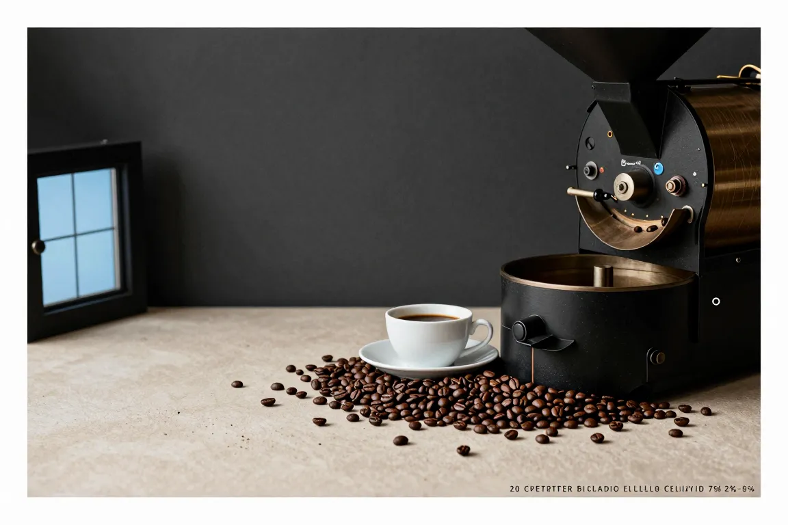

веб · 2011–now · также: Живая фотография, Петля из неподвижного кадра, Фото с одной движущейся частью
Неподвижная фотография, в которой одна небольшая часть движется в бесшовной петле: волосы на ветру, пар из чашки, моргание. Двое нью-йоркских художников дали форме имя в 2011 году во время недели моды.

Главная идея
Кадр неподвижен, а одно небольшое движение заставляет зрителя смотреть дольше.
Принципы дизайна
Замораживайте не меньше 90% кадра; пусть в петле движется одна область в 5–15% площади.
Зацикливайте движение на 2–5 секунд с бесшовным стыком, 24 fps и выше.
Маскируйте движущуюся область мягким краем 4–12px, чтобы стык оставался незаметным.
Снимайте со штатива, чтобы неподвижная часть не уплывала больше чем на 1px.
Грейдите кадр приглушённым цветом, контрастом 0,9 и зерном 2–4%.
Берите кадр 4:5 или 16:9 без подписи внутри; заголовок ставьте под ним строкой антиквы 14px.
Показывайте изображение на всю ширину с полем 24–64px вокруг.